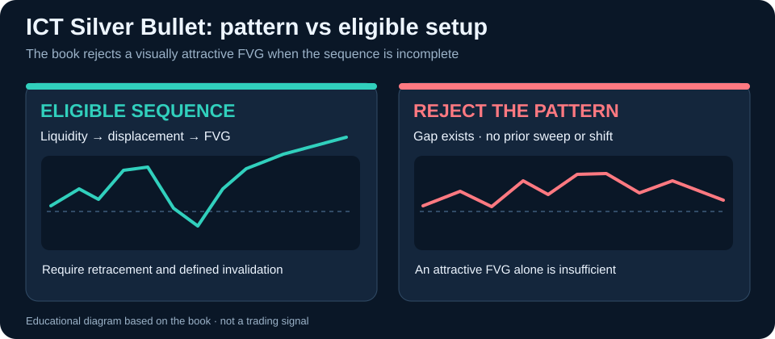

Chapter 1: The Silver Bullet in One Page
Begin by selecting the observation and defining its context before seeking an entry.
The Silver Bullet Trading Strategy — A Rule-Based Guide to Liquidity, Displacement, Fair Value Gaps, Time Windows, Execution, Risk, and Trade Review
Free Google Books Preview
Read a free sample of this book on Google Books before you buy.
The original source for ICT Silver Bullet develops 16 consecutive chapter topics, beginning with The Silver Bullet in One Page, moving through Entry, Stop, Invalidation, and Target, and reaching The 20-Session Silver Bullet Training Plan. The value is in the connection among those questions: readers can see where the method starts, which contexts it considers and which later judgments depend on its earlier definitions.
Discover the full method: View or buy on Google Play Books · Explore the available reader sample
Expand any stage to see the original chapter headings. The five-stage grouping is editorial navigation, not a claim that the book itself has five formal parts.
Read these topics in sequence, then try to distinguish what a chart shows from the interpretation you would apply to it.
Read these topics in sequence, then try to distinguish what a chart shows from the interpretation you would apply to it.
Read these topics in sequence, then try to distinguish what a chart shows from the interpretation you would apply to it.
Read these topics in sequence, then try to distinguish what a chart shows from the interpretation you would apply to it.
Begin by selecting the observation and defining its context before seeking an entry.
Ask what competing explanation or contrary market behavior could weaken this idea.
Describe the conditions that would make this analysis worth acting on, and the point at which it should be abandoned.
This page outlines 16 consecutive numbered chapters from the original source contents. The complete edition develops the details, context and illustrations.
Yes. The source contents place this subject in Chapter 2.
The manuscript lists this topic as Chapter 9, between earlier foundations and later applications.
The final numbered chapter topics include Backtesting the Silver Bullet; The Silver Bullet Casebook; The 20-Session Silver Bullet Training Plan.
No. Trading setups may fail; spreads, slippage, leverage, market changes and execution risk can affect results. The material is educational rather than personalized investment advice.
Move beyond the title and see how the chapters connect. ICT Silver Bullet by Faramarz Kowsari is available as a full ebook.
Read the complete book · Read the free sample if available
Educational trading material; charts, examples and apparent setups are not guarantees of future performance.
Chapter 11 is unusually useful because it documents missed, incomplete and misleading setups. The visible Fair Value Gap (FVG) is only one link in the chain: session window, mapped liquidity, meaningful sweep or interaction, structural response, displacement, retracement, invalidation and realistic reward geometry must be assessed together.

Inside a specified New York local-time window, map the prior liquidity level, identify its interaction, look for meaningful directional displacement and structural consequence, then assess whether a relevant FVG retracement provides an execution location.
The source calls this a common false positive: the rectangle looks clear, but the liquidity event or structural shift is missing. A favorable-looking final candle does not retroactively create the missing setup conditions.
If price never retraces, there is no fill. If opposing liquidity is too close or the stop must be too wide, label it valid pattern, rejected geometry. Abnormal spreads, slippage or major news risk can independently justify standing aside.
The author studies New York local-time windows of 03:00–04:00, 10:00–11:00 and 14:00–15:00 with daylight-saving adjustment. Under a strict New York AM definition, a setup forming at 11:07 is not retrospectively reclassified as in-window just because it would have won.
Two-session comparison: Session A has a sweep, structural displacement, an unfilled FVG retracement and logical invalidation during the chosen window: it deserves evaluation, not automatic execution. Session B has an impressive FVG at 10:30 but no meaningful earlier sweep or shift: under the chapter's rule sequence it is not an eligible Silver Bullet. Record the second as a filtered opportunity rather than hiding it from a backtest.
No. The book discusses displacement without a usable FVG and sweeps without convincing displacement. Both are missing-condition cases.
Not under a fixed window definition. Including out-of-window winners changes the tested strategy after seeing the outcome.
Nearby objectives, excessive invalidation distance, spread or slippage can invalidate its risk geometry even when the visual sequence qualifies.
Explore the official book preview before purchase. Charts and examples are for education and do not promise future trading results.
Explore the library by subject and find related books faster.
This title is part of the Faramarz Kowsari Trading Books Library, a dedicated collection of practical books on futures, options, order flow, Smart Money Concepts, technical analysis, scalping, swing trading, market-specific trading, risk and systematic research.
Browse related Smart Money, Liquidity & Market Structure books →